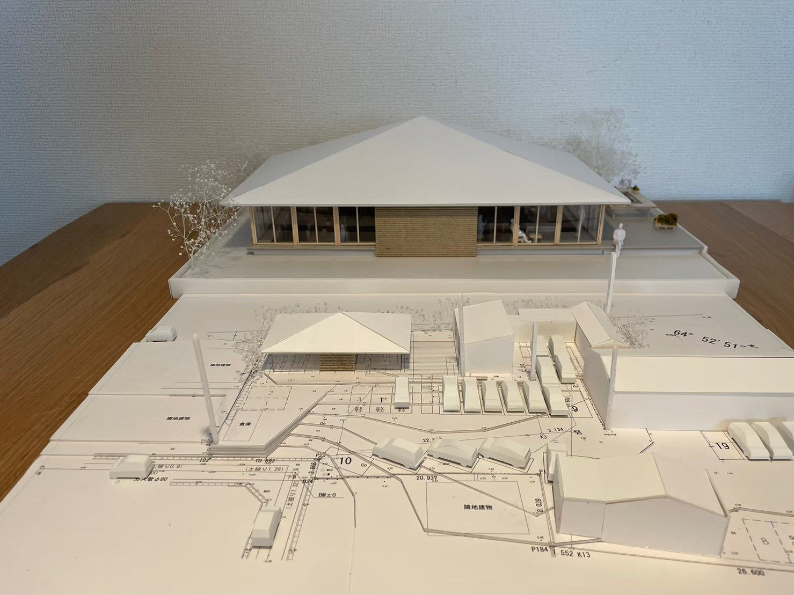
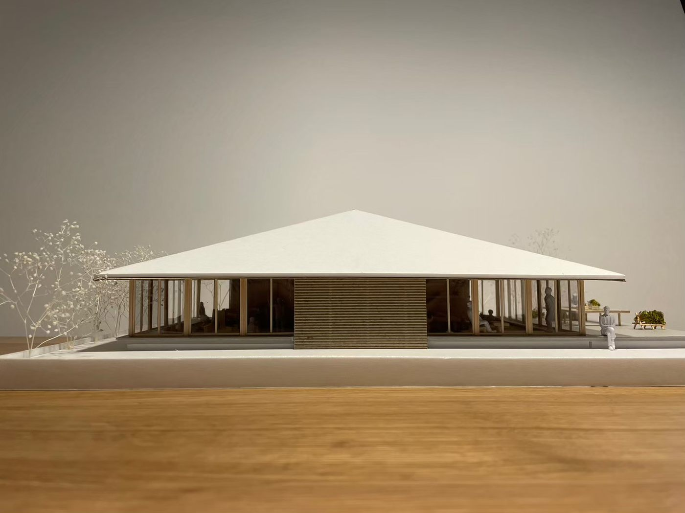
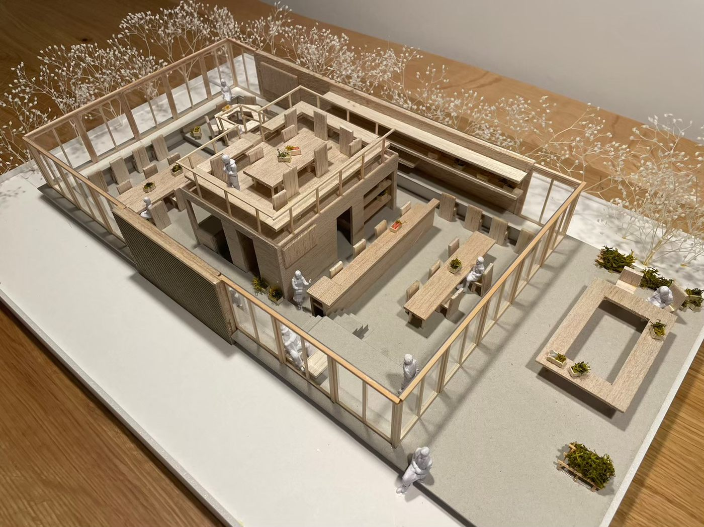
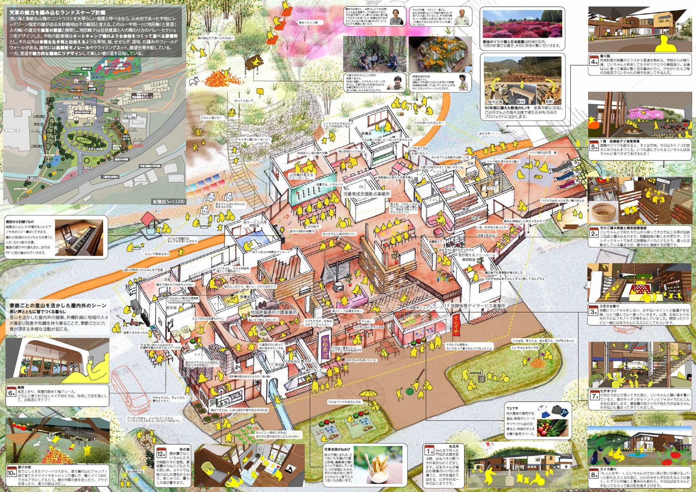
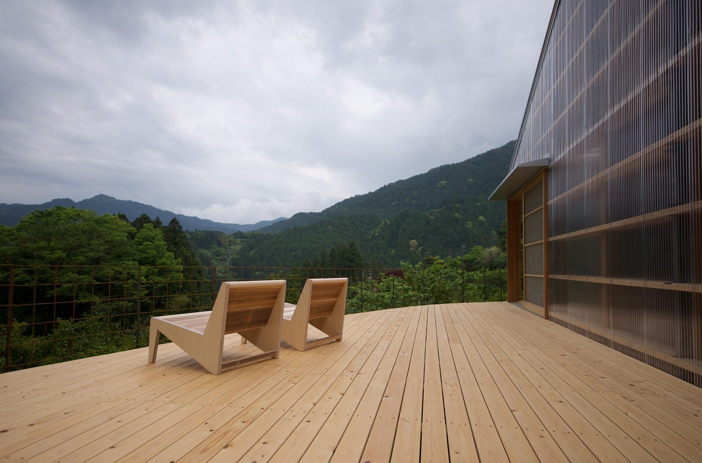
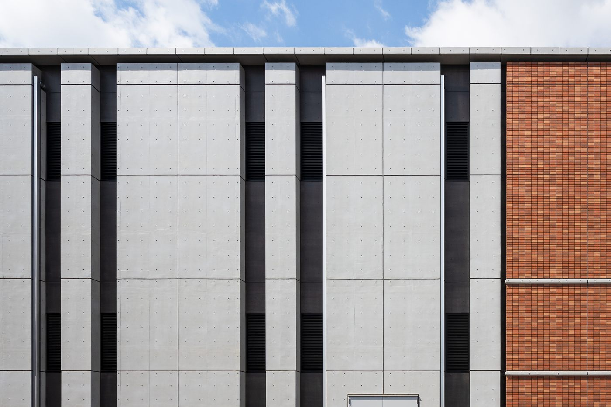
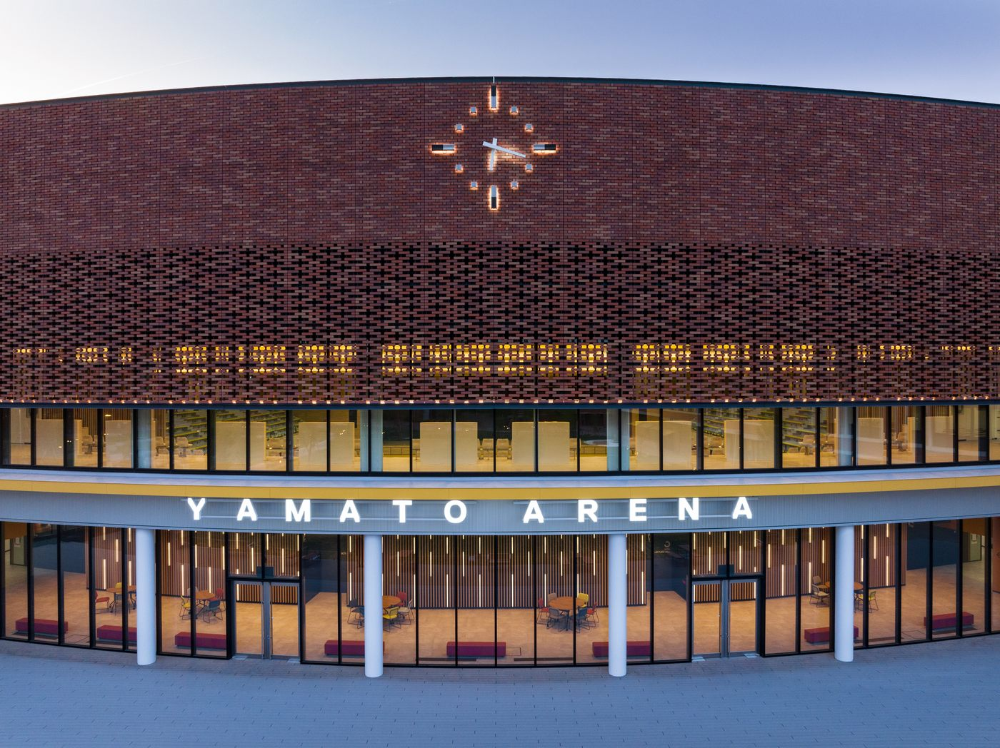
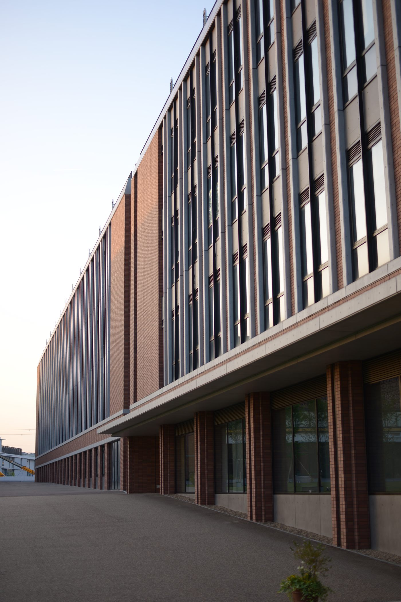
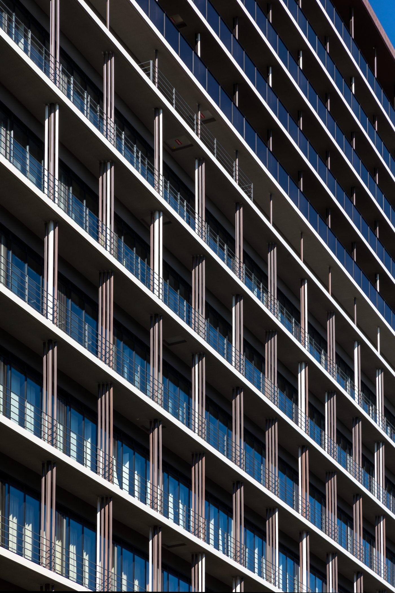

01
立石工務店
TATEISHI KOMUTEN / 木造オフィス / 計画案




景色を創る。
その土地の豊かさを、かたちにする。
建築は、新しく何かをつくることではなく、
その土地にある風景や、人の営みを丁寧に読み解くことから始まると考えています。
そこには、暮らしの積み重ねや、土地の記憶、受け継がれてきた物語があります。
私たちは、その場所らしさを大切にしながら、
これまでの物語を受け取り、
これからの物語へと繋いでいくことを目指します。
TATEISHI KOMUTEN / 木造オフィス / 計画案



TOKUSHIMA CONCERT HALL / コンペ提案
JŌHANA BRANCH / 宗教施設 / 計画
AMAKUSA / 福祉複合施設コンペ

KAGOME BUILDING / オフィス / 計画
KAMIKATSU FARM STAY / 宿泊施設 / 計画

RITSURINSŌ / 福祉施設 / 既存写真
YAMATO UNIVERSITY / 教育施設



WIND PATH / マンションリノベーション
NAKAMURA WARD COMPLEX / 公共施設
HANKYU GARDENS PLUS / 商業施設

いつかここから飛び出したい。
studio20は、建築・都市・風景に関わる設計活動を通して、その土地にある豊かさを読み解き、これからの物語へとつないでいく設計スタジオです。